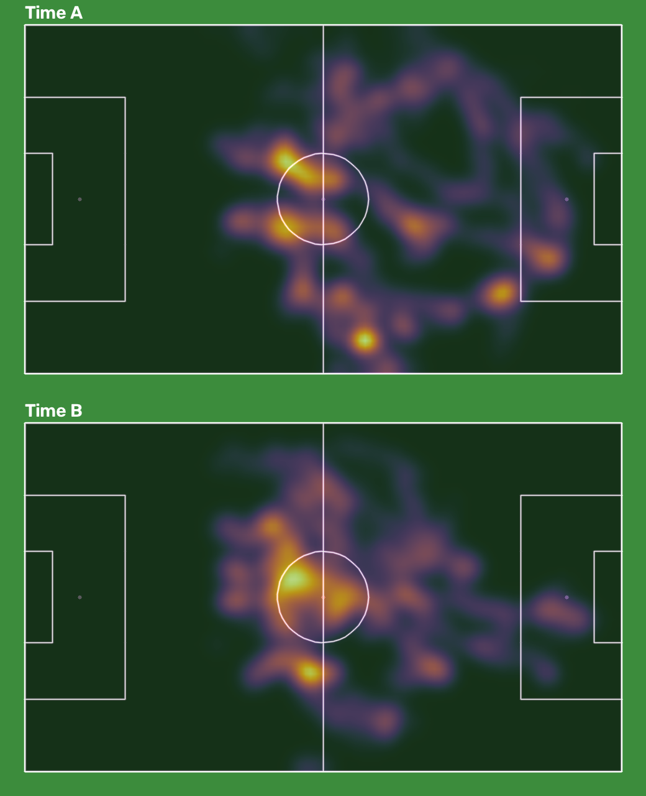

Resumo
30 s1920×1080, 25 fps
24pessoas por frame (mediana)
70%frames com a bola
100%frames com mapa tático
99% × 1%posse A × B (285 frames com dono)
47IDs de pessoa no vídeo
Nenhum alerta: o vídeo se parece com uma transmissão de câmera principal.
Vídeo com detecções
Rótulo #ID confiança: o ID segue a pessoa ao longo do vídeo; a confiança é o quanto o modelo
está seguro daquela detecção naquele frame.
Mapa tático
Linhas rosa: o campo oficial reprojetado pela homografia. Quando elas casam com as linhas reais, as posições em metros são confiáveis (erro típico de ~3 m).

Jogadores (IDs com 5 s ou mais em cena)
| ID | time | tempo em cena (s) | distância (m) | vel. média (km/h) | vel. máx. 1 s (km/h) |
|---|---|---|---|---|---|
| 6 | A | 30 | 97.6 | 11.7 | 21.7 |
| 18 | A | 30 | 94 | 11.3 | 21.2 |
| 20 | B | 30 | 92.6 | 11.1 | 20.9 |
| 13 | A | 28.8 | 91.6 | 11.4 | 27.6 |
| 16 | A | 30 | 90.9 | 10.9 | 20.2 |
| 14 | B | 30 | 89.4 | 10.7 | 21.8 |
| 22 | B | 29.9 | 87.2 | 10.5 | 21.5 |
| 7 | A | 30 | 84.7 | 10.2 | 18.1 |
| 15 | B | 30 | 81.2 | 9.8 | 19.6 |
| 24 | B | 26.5 | 78.6 | 10.7 | 21.6 |
| 0 | A | 30 | 77.2 | 9.3 | 18.7 |
| 8 | B | 23.2 | 67.9 | 10.6 | 16.8 |
| 2 | B | 30 | 67.7 | 8.1 | 20.6 |
| 4 | A | 30 | 65.1 | 7.8 | 19 |
| 11 | B | 30 | 64.2 | 7.7 | 17.6 |
| 1 | A | 30 | 63.9 | 7.7 | 14.7 |
| 5 | A | 30 | 63.9 | 7.7 | 20.7 |
| 9 | A | 29.7 | 63.8 | 7.7 | 18.3 |
| 10 | B | 30 | 61.6 | 7.4 | 14.4 |
| 3 | B | 14.8 | 34.3 | 8.3 | 14.7 |
| 34 | B | 14.2 | 24.7 | 6.3 | 12.8 |
| 27 | goleiro | 5.2 | 14.2 | 9.9 | 16.1 |
| 40 | B | 6.8 | 13.9 | 7.4 | 15.9 |
| 30 | A | 11.7 | 9.8 | 3 | 7.9 |
| 38 | A | 9.9 | 9.4 | 3.4 | 7.9 |
Distância e velocidade herdam o erro da homografia; use para comparar jogadores do mesmo vídeo, não como medida exata.
Arquivos
573e61_0_finetuned_tracks.csv: cada detecção por frame (caixa em pixels, confiança, time).573e61_0_posicoes.csv: as mesmas detecções com posição no campo em metros.573e61_0_jogadores.csv: distância e velocidade por jogador.573e61_0_resumo_tatico.json: números do resumo.